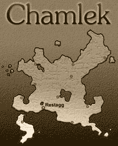

Fantasy worlds come in many varieties, from the "hard core"
medieval-simulation school to the more fanciful realms of high fantasy,
with alabaster castles and jeweled gardens in the place of the more traditional
muddy squalor. Despite their differences, these share a vital common element:
ordinary people. Most realms of fantasy, no matter how baroque or magical,
can not get by without a supply of ordinary farmers, merchants, quarreling
princes and palace guards. Clustered into villages and crowding the cities,
they provide the human backdrop for adventure.
Many worlds, however, both "home-grown" and professionally designed,
lack consistency when it comes to the spread of normal people and their
businesses. Fantasy villages of 400 countryfolk can be seen supporting
a dozen taverns and a brothel without blinking an economic eye. And when
something like that appears in a respected game-supplement, it takes on
the mantle of Common Knowledge, and gets repeated.
Of course, doing the research necessary to find out how common a large
city should be, or how common castles are, or how many shoemakers can be
found in a town, can take up time not all GMs have available. To the end
of more plausible and satisfying world design, this article has been prepared.
The information in this article is drawn from a variety of historical sources,
focusing on results, rather than on the thousands of details that create
them. The rules here are meant to serve as a baseline, to be deviated from
at need, not to cast numbers into iron - halve things, double things, or
otherwise fiddle with them to suit the feel you're going for. The figures
employ documented data from time periods ranging from the 12th-14th centuries,
and from locales as varied as Russia, England, France, Germany and Italy.
When a "default" was needed, rather than an average, I opted
for late-medieval France more often than not.
Population Density: How Many In That Kingdom?
Unless the kingdom is quite young, it is likely riddled
with villages, a mile or so apart, covering every inch of the countryside.
This is a different picture than that in most published fantasy settings,
which frequently feature villages isolated by many miles of monster-haunted
wilderness. It is important to remember that agrarian communities on the
scale of the village or hamlet are not self-supporting in any real sense;
they exist in vast networks.
The only notable exception to this rule is frontier country, where isolated
towns have no choice but to exist. But these towns will tend to be large
and walled—a people huddled together for safety. On the frontier, food
and goods are usually delivered by merchant caravans rather than produced
by local agriculture. This is especially true when the wilderness is inhabited
by monsters!
The average population density for a medieval country is from 30 per square
mile (for countries with lots of rocks, lots of rain, and lots of ice—or
a slave-driving Mad King) to a limit of about 120 people per square mile,
for countries with rich soil and favorable seasons. No land is wasted if
it can be settled and farmed. There are many factors that determine the
population density of a land, but none as important as arable land and
climate. If food will grow, so will peasants. If desired, exact density
can be rolled randomly, and land arability reverse-engineered from the
result. A roll of 6d4, multiplied by five, will do the trick nicely.
Some Historical Comparisons: Medieval France tops the list, with
an estimated 14th-century density of 105 people/sq. mile. The French were
blessed with an abundance of arable countryside, waiting to be farmed.
Modern France has more than twice this many people. Germany, with a slightly
less perfect climate and a lower percentage of arable land, averaged 87
people per square mile. Italy was similar (lots of hills and rocky areas)
with 86. The British Isles were the least populous, with only 42 people
per square mile, most of them clustered in the southern half of the isles.
Hexes: It may be important for some GMs using this article to know
how much land is in a hexagonal area! To determine the area of a hex, multiply
its width by 0.9306049, and square the result. Thus, if your game-map has
hexes 30 miles across, each hex represents about 780 square miles. Put
a hex like that in the middle of medieval Germany, and it supports an average
of 67,800 people.
Town and City Population: How Many In Those Walls?
For purposes of this article, settlements will be divided
into Villages, Towns, Cities and Big Cities (known as "supercities"
in the parlance of urban historians).
Villages range from 20 to 1,000 people. Most kingdoms will
have thousands of them. Villages are agrarian communities within the safe
folds of civilization. They provide the basic source of food and land-stability
in a feudal system. Usually, a village that supports orchards (instead
of grainfields) is called a "hamlet." Occasionally, game writers
use the term to apply to a very small village, regardless of what food
it produces.
Towns range in population from 1,000-8,000 people. Culturally,
these are the equivalent to the smaller American cities that line the interstates.
Cities and towns tend to have walls only if they are frequently threatened.
Cities tend to be from 8,000-12,000 people, with an average
in the middle of that range. A typical large kingdom will have only a few
cities in this population range. Centers of scholarly pursuits (the Universities)
tend to be in cities of this size, with only the rare exception thriving
in a Big City.
Big Cities range from 12,000-100,000 people, with some exceptional
cities exceeding this scale. Some historical examples include London (25,000-40,000),
Paris (50,000-80,000), Genoa (75,000-100,000), and Venice (100,000+). Moscow
in the 15th century had a population in excess of 200,000!
Large population centers of any scale are the result of traffic. Coastlines,
navigable rivers and overland trade-routes form a criss-crossing pattern
of trade-arteries, and the towns and cities grow along those lines. The
larger the artery, the larger the town. And where several large arteries
converge, you have a city. Villages are scattered densely through the country
between the larger settlements.
Population Spread
Okay, so you know how big your kingdom is, and how many
people live there. How many people live in the cities, and how many cities
are there? How many live in villages?
From 1% to 8% of the population will be urban to some degree - living
in cities and towns. The factors which influence this figure range all
over the map. Pick a number you like, or roll 1d8 for the percentile.
The remainder of the population will be rural, living in villages and hamlets
and huts and so on. Individual village populations should be determined
randomly or by fiat (the average will range from 100 to 400 people or so).
From 2-5% of the country's populus will live in settlements too small to
be called villages—isolated dwellings, or collections of huts with a total
population of under 20—or will be itinerant workers and wanderers.
Determine the population of the largest city in the kingdom. This is equal
to (P times M), where P is equal to the square root
of the country's population, and M is equal to a roll of 2d4+10
(the average roll is 15).
Subtract the largest city's population from the total urban population.
The remainder should be divided up into other Cities and Big Cities, as
the GM sees fit. A realistic rule of thumb: the second-ranking city will
be from 25-75% the size of the largest city; each remaining city will be
10-20% smaller than the previous one, until the 8,000-12,000 range is hit.
The kingdom will have one or two cities in that range (additional ones
if the GM likes), and then the rest of the urban population will be divided
into Towns, instead. If you run out of Urban population before hitting
the Towns level, erase the last city on your list, and divide its population
up into Towns.

An Example Kingdom: Chamlek
Chamlek is a smallish island kingdom with an area of 70,000
square miles, with a good climate and only a few rocky hills disturbing
a well-watered countryside. Her population is 5 million, for an average
density of about 71 people per square mile.
Using the formulae above (and average values), we can determine the following
about Chamlek: It has about 225,000 urban dwellers, with the rest rural.
Chamlek's largest city, Restagg, has a population of 33,500. The next-ranking
major cities are Volthyrm (17,000), McClannach (15,000), Cormidigar (14,000)
and Oberthrush (12,000). These cities account for 91,500 of the 225,000
city-dwellers. The remaining 133,500 are divided into towns - perhaps 30
or so, all told.
Merchants and Services
In a village of 400 people, just how many inns and taverns
are realistic? Not very many. Maybe not even one. When traveling across
the countryside, characters should not run into a convenient sign saying
"Motel: Free Cable and Swimming Pool" every 3 leagues. For the
most part, they will have to camp on their own or seek shelter in people's
homes.
Provided they are friendly, the latter option should be no trouble. A farmer
can live in a single place all his life, and he will welcome news and stories
of adventures, not to mention any money the heroes might offer!
Each type of business is given a Support Value (SV). This is the number
of people it takes to support a single business of that sort. For instance,
the SV for shoemakers (by far the most common trade in towns) is 150. This
means that there will be one shoemaker for every 150 people in an area.
These numbers can vary by up to 60% in either direction, but provide a
useful baseline for GMs. Think about the nature of the town or city to
decide if the numbers need to be changed. A port, for instance, will have
more fishmongers than the table indicates.
To find the number of, say, inns in a city, divide the population of the
city by the SV value for inns (2,000). For a village of 400 people, this
reveals only 20% of an inn! This means that there is a 20% chance of there
being one at all. And even if there is one, it will be smaller and less
impressive than an urban inn. The SV for taverns is 400, so there will
be a single tavern.
| Business |
SV |
Business |
SV |
| Shoemakers |
150 |
Butchers |
1,200 |
| Furriers |
250 |
Fishmongers |
1,200 |
| Maidservants |
250 |
Beer-Sellers |
1,400 |
| Tailors |
250 |
Buckle Makers |
1,400 |
| Barbers |
350 |
Plasterers |
1,400 |
| Jewelers |
400 |
Spice Merchants |
1,400 |
| Taverns/Restaurants |
400 |
Blacksmiths |
1,500 |
| Old-Clothes |
400 |
Painters |
1,500 |
| Pastrycooks |
500 |
Doctors |
1,700* |
| Masons |
500 |
Roofers |
1,800 |
| Carpenters |
550 |
Locksmiths |
1,900 |
| Weavers |
600 |
Bathers |
1,900 |
| Chandlers |
700 |
Ropemakers |
1,900 |
| Mercers |
700 |
Inns |
2,000 |
| Coopers |
700 |
Tanners |
2,000 |
| Bakers |
800 |
Copyists |
2,000 |
| Watercarriers |
850 |
Sculptors |
2,000 |
| Scabbardmakers |
850 |
Rugmakers |
2,000 |
| Wine-Sellers |
900 |
Harness-Makers |
2,000 |
| Hatmakers |
950 |
Bleachers |
2,100 |
| Saddlers |
1,000 |
Hay Merchants |
2,300 |
| Chicken Butchers |
1,000 |
Cutlers |
2,300 |
| Pursemakers |
1,100 |
Glovemakers |
2,400 |
| Woodsellers |
2,400 |
Woodcarvers |
2,400 |
| Magic-Shops |
2,800 |
Booksellers |
6,300 |
| Bookbinders |
3,000 |
Illuminators |
3,900 |
| *These are licensed doctors. Total doctor SV is 350. |
Some other figures: There will be one noble household per 200 population,
one lawyer ("advocate") per 650, one clergyman per 40 and one
priest per 25-30 clergy.
Businesses not listed here will most likely have an SV from 5,000 to 25,000!
The "Magic Shop" means a shop where wizards can purchase spell
ingredients, scroll paper and the like, not a place to buy magic
swords off the shelf.
Agriculture
At the medieval level of technology, a square mile of settled
land (including requisite roads, villages and towns) will support 180 people.
This takes into account normal blights, rats, drought, and theft, all of
which are common in most worlds. If magic is common, the GM may decide
a square mile of land can support many more people. Please note that the
number of people a square mile of agricultural land will support is not
the same as the maximum population density for a kingdom.
Once you have decided the ability of the land to support people, you can
determine the amount of wilderness/unfarmable country in the kingdom by
working backwards. Take the example kingdom of Chamlek again, the island
kingdom with 70,000 square miles and 5 million citizens. With one square
mile supporting 180 people, that means there is approximately 27,800 square
miles of farmland—about 40% of the total area of the isle. This offers
a graphic example of just how sparse the population really is. The remaining
60% of the country is wilderness, rivers and lakes.
Even if Chamlek had the maximum population density (120 people per
square mile), the farmland would be a whopping 66.66% of the total land,
leaving one-third of the country to wilderness (mostly forested hills between
the farms) and waterways. This is the maximum achieved on Earth, though
higher is theoretically possible if the GM determines that the entire
country is arable.
While the average distance between population centers can be derived from
the total land area, the average walking distance from one village to the
next is more realistically determined by considering only the settled land.
Villages and towns tend to cluster tightly along the arteries of travel
defined by the lines between the cities—leaving gaps of wilderness in the
middle.
Castles
Okay, we now completely understand the lay of the land as
regards civilization, the cities and farms. Nearer to the heart of the
adventurer, however, is the castle, or better still, the ruined castle.
Once again, how many should there be?
Ruins, first of all, depend on the age of the region. The following formula
is only a guide. The frequency of ruins in Europe varied greatly depending
on military history and remoteness of the area. To determine the approximate
number of ruined fortifications, divide the kingdom's population by five
million. Multiply the result by the square root of the kingdom's age. If
the kingdom has changed hands a lot, use the total age—the number
of years that castle-building people have lived there, regardless of the
Royal Lineage.
Chamlek, our island kingdom, has five million people today, which makes
the first part of the formula very simple. Chamlek has been populated by
castle-building folk for 300 years. She has 17.32 ruined forts or castles,
which means 17 for sure, and a 32% chance of an 18th.
Active castles are much more common; ruins are rare because the solid ones
are constantly put back into service! Assume one functioning castle for
every 50,000 people. The age of the kingdom is not really a factor. Chamlek
would have 100 active castles of various stripes, approximately.
75% of all castles will be in the civilized areas of a kingdom. The other
25% will be in the "wilderness."
The role of these castles is something too world-oriented to be reduced
to formula. Most will mark the landholdings of Barons and Dukes, but some
may be bandit strongholds, or the outposts of Goblin warlords. It is all
up to the GM.
Miscellany
City Size: Cities and towns of the Middle Ages cover one
square mile of land per 38,850 people, on average. This is a density of
about 61 per acre or 150 per hectare, so the land within the walls of a
typical city of 10,000 would be 165 acres—hardly a city by modern standards,
in terms of population OR size. Some very large cities may have had up
to twice this density.
Law Enforcement: A well-kept medieval city will have 1 law officer
(guardsman, watchman, etc.) for every 150 citizens. Slack cities will have
half this number. A few rare cities will have more.
Institutions of Higher Learning: There will be one University for
every 27.3 million people. This should be computed by continent, not
by town! This figure assumes entirely scholarly universities, not those
dedicated to the arcane arts. Whether or not magical universities are separate
institutions, and how common they are, is a matter for GM decision.
Livestock: The livestock population, on the whole, will equal 2.2
times the human population, but 68% percent of this will be fowl (chickens,
geese and ducks). The rest will be dairy cows and "meat animals:"
Pigs are superior as food animals, since they eat less individually, and
are not picky eaters. Sheep will be extremely common if the region has
a wool market (like medieval England, which was built on wool). Cattle
for labor and milk will be found occasionally, but cattle raised specifically
for meat are only found in very prosperous areas.
Bibliography
The SV list was taken (mostly) from the tax list of Paris in
1292, and checked against other sources for accuracy. This list can be
found in Life in a Medieval City by Joseph and Francis Geis (Harper
and Row, 1981). This is a fine book by amateur historians, which includes
some fascinating descriptions of medieval city life and layout. Other books
consulted include:
Medieval Cities, by Henri Pirenne. Doubleday.
The Castle Story, by Sheila Sancha. Harper Colophon.
The Medieval Town, by John H. Mundy and Peter Riesenberg. Robert
E. Krieger Publishing Company.
The Medieval Town, by Fritz Rörig. University of California
Press.
Medieval Regions and Their Cities, by Josiah Cox Russel. David &
Charles press.

Want more info on how things worked in the Middle Ages? Give
our eBook, Fief, a look!
Questions about the article? Visit the Blue Room FAQ;
I have an entire section devoted to this article. Please read
the FAQ before emailing.
This piece has really made the rounds . . . The earliest version was
rejected by Dragon magazine back in 1993. I dusted it off, expanded
it, and submitted it to Pyramid after that (no response at all).
I improved it further for my own use, then sold it to The Familiar -
just in time for them to vanish. After the obligatory touches of improvement,
I sold it again, to Shadis, just in time for them to vanish!
Now, I've given it a home where it can rest, and hopefully be discovered
by people that won't reject it, ignore it, or go out of business after
touching it (and, just recently, another popular gaming magazine approached
me wanting to publish it, so I guess there's no rest for the wicked)!
Demographic Spreadsheets:
A nice chap named Marcus Hulings
has designed a spreadsheet inspired by earlier versions of this article.
This handy ZIP archive (26k) contains the file
in both Excel and Quattro Pro formats. Another nice chap, Anthony M. Plum,
did a spreadsheet, too; it's available from his site by clicking
here (29k ZIP, Excel format).
Online Demographics Calculators:
Brandon Blackmoor has created an
excellent Javascript version of the material; I can't use it in my
primitive old browser, but I've heard nothing but nice things about it!
An Australian gamer named Bronwyn Evans created two
online calculators likewise based on the material here (one for general
kingdom-scale stats, and another for city businesses). Douglas Schulz made
an outstandingly groovy
online calculator that doesn't require any kind of browser voodoo at
all. If you're reading this page at all his calculator will probably work
perfectly - including a great implementation of the random values (which
I highly recommend, and the Schulz calculator uses by default).
Demographics in French:
French gamer Antoine Dinimant has
placed la Démographie
médiévale facile on the Web for those who dig French
to enjoy. It's a translation of this article, with additional notes added
from our correspondence!
|